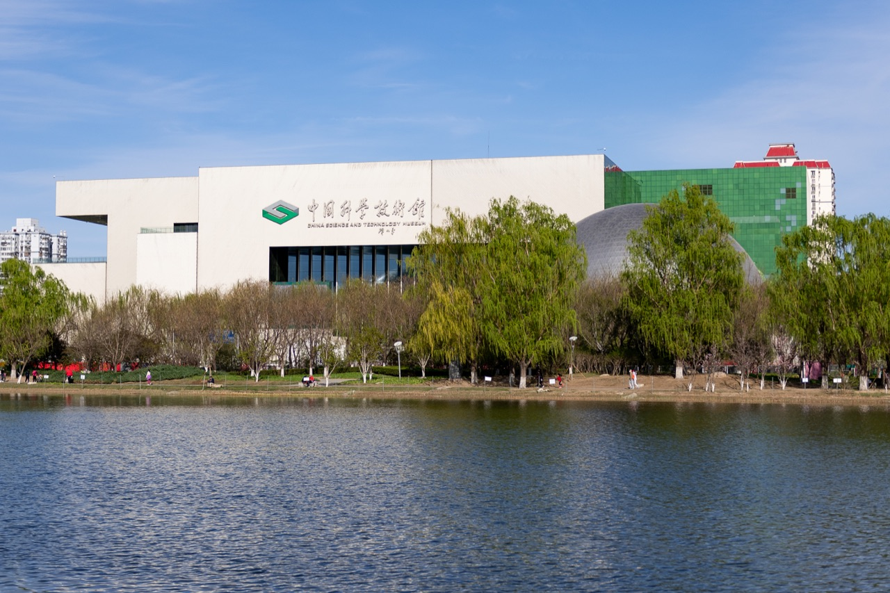
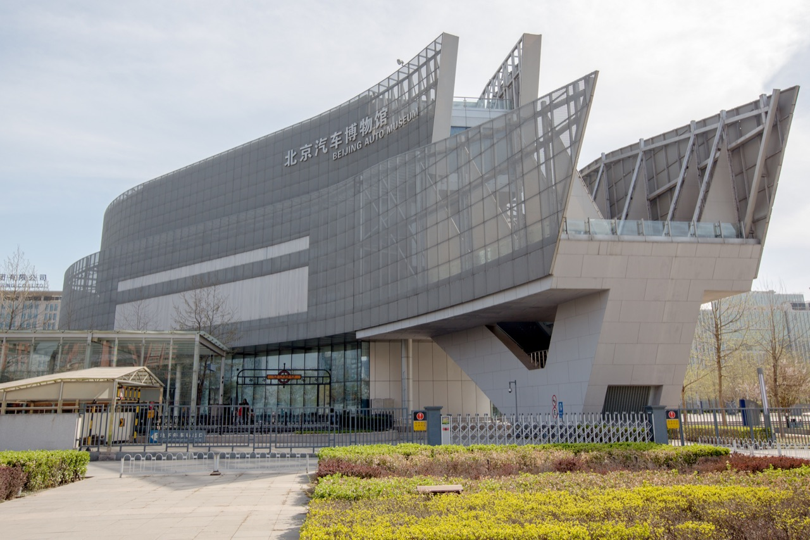
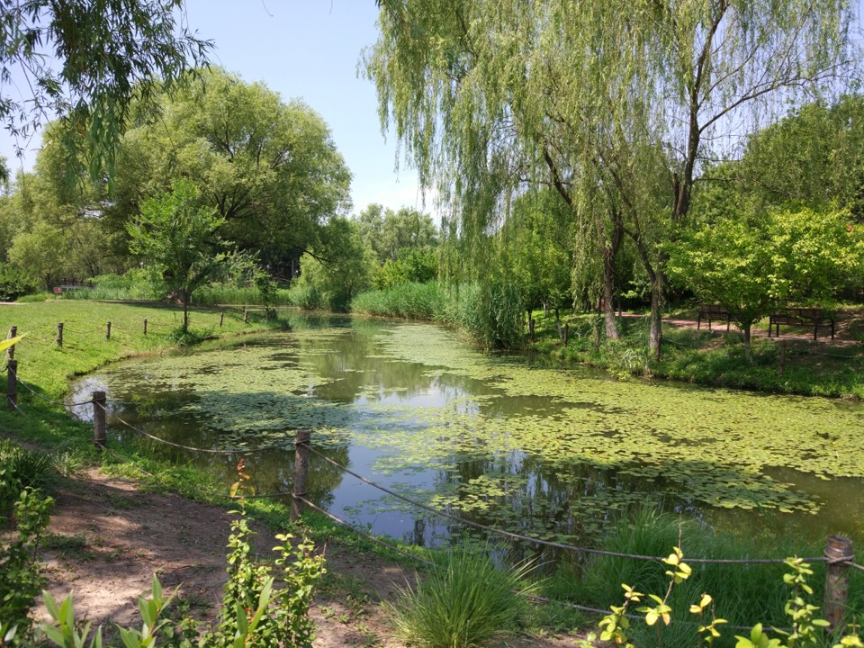
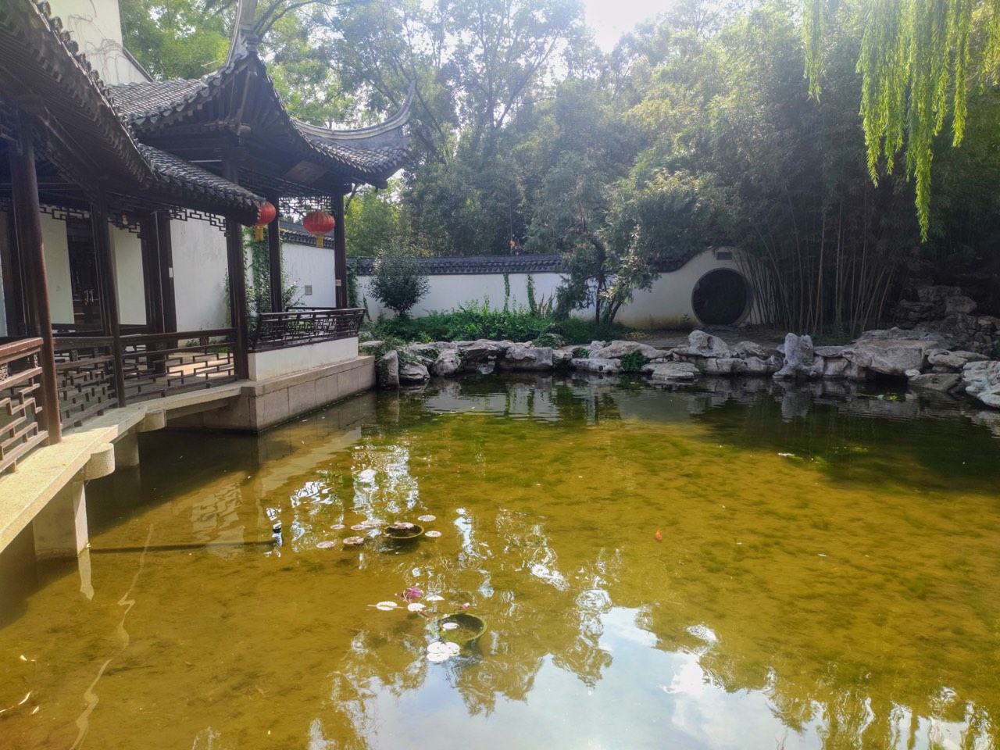
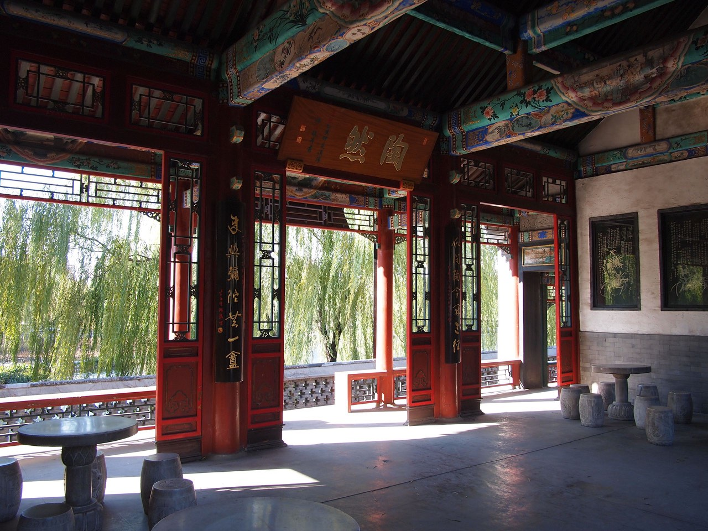
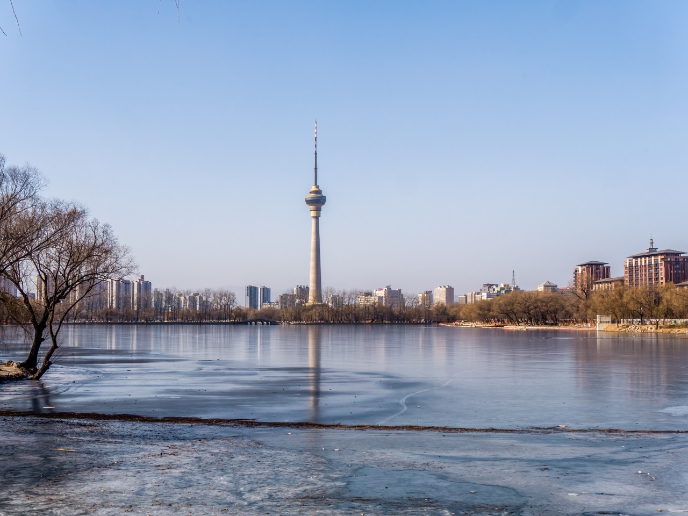
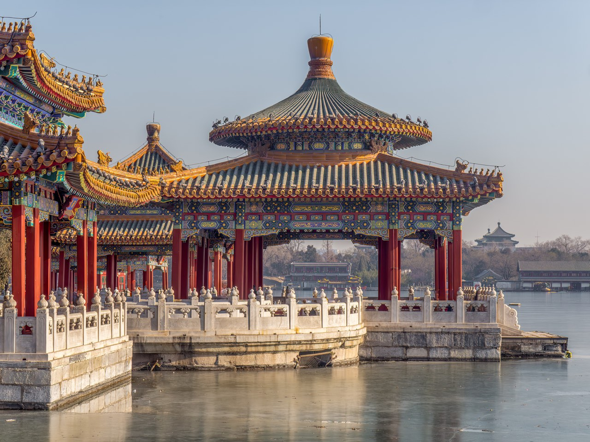
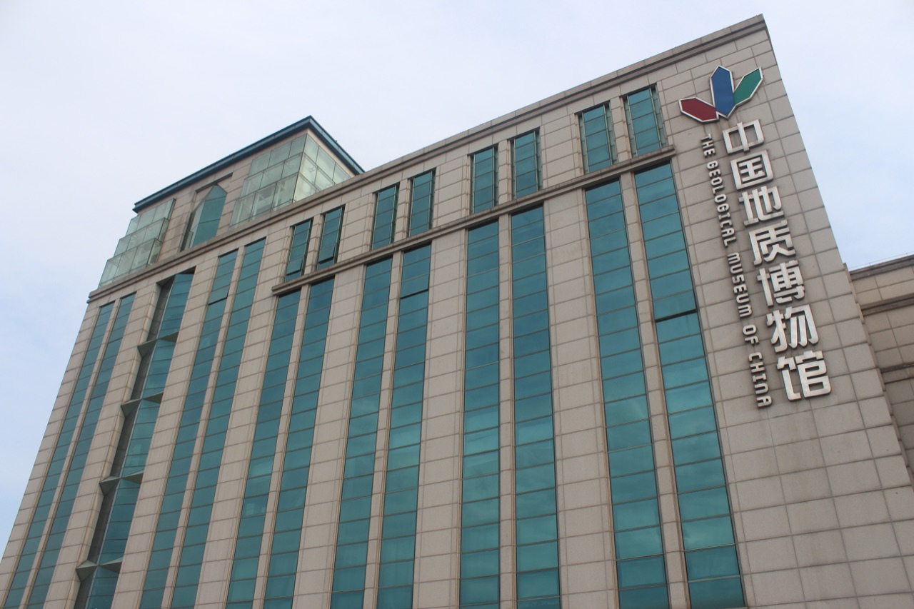
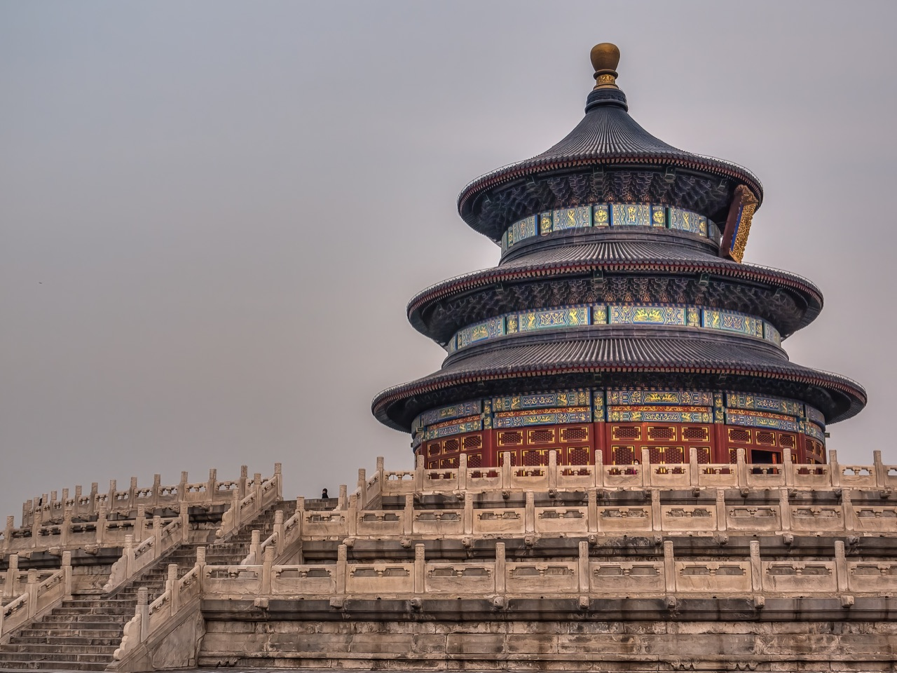
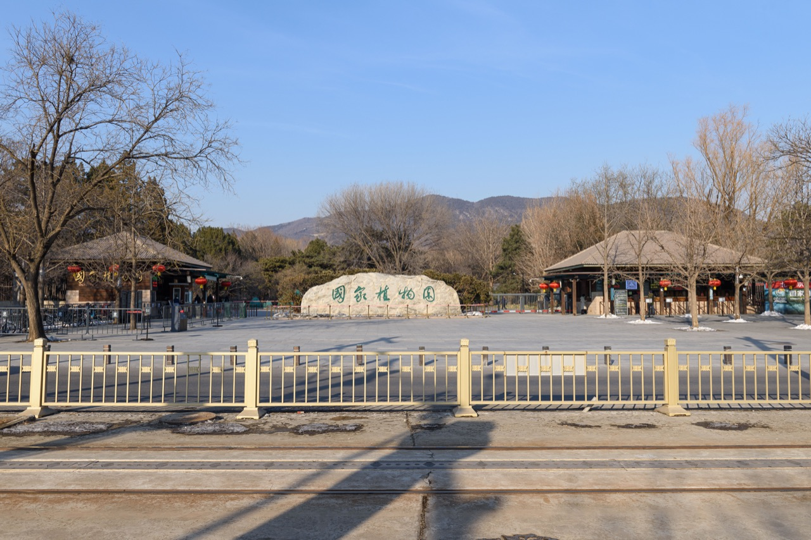

中国科学技术馆

作品：China Science and Technology Museum (20210403155720).jpg
摄影：N509FZ
拍摄日期（来源声明）：2021-04-03
原作品及完整原图 · CC BY-SA 4.0
.jpg){kind=link}
2021年中国科学技术馆外观与水岸历史照片，不代表当前设施或开放状态。
由来源原图等比例缩小至1280×853并进行JPEG压缩（质量参数78）；未裁切、重绘、去人物或换背景。页面按容器缩放、裁显；完整原图见来源。
图片托管与署名材料；可访问不表示小程序已启用这些封面。仅等比例缩小及JPEG压缩，未使用AI重绘。照片是历史实景，不代表当前设施、季节或开放状态，原作者不因此为本小程序背书。
照片及机械处理结果沿用各自标注的许可；保留署名、来源、许可和处理说明。照片许可不替代其他权利核验。

作品：China Science and Technology Museum (20210403155720).jpg
摄影：N509FZ
拍摄日期（来源声明）：2021-04-03
原作品及完整原图 · CC BY-SA 4.0
2021年中国科学技术馆外观与水岸历史照片，不代表当前设施或开放状态。
由来源原图等比例缩小至1280×853并进行JPEG压缩（质量参数78）；未裁切、重绘、去人物或换背景。页面按容器缩放、裁显；完整原图见来源。

作品：Beijing Automobile Museum (from north) 2016 April.jpg
摄影：Morio
拍摄日期（来源声明）：2016-04-03
原作品及完整原图 · CC BY-SA 4.0
2016年北京汽车博物馆北侧建筑外观历史照片，不代表当前入口安排。
由来源原图等比例缩小至1280×853并进行JPEG压缩（质量参数78）；未裁切、重绘、去人物或换背景。页面按容器缩放、裁显；完整原图见来源。

作品：Olmypic Forest Park in Summer, riverbank, Beijing, Jun 2016.jpg
摄影：颜邯
拍摄日期（来源声明）：2016-06-16
原作品及完整原图 · CC BY-SA 4.0
2016年夏季奥林匹克森林公园水岸和柳树局部，不代表公园全貌或当前季节。
由来源原图直接等比例缩小至960×720并进行JPEG压缩（质量参数70）；未裁切、重绘、去人物、调色或换背景。页面按容器缩放、裁显；完整原图见来源。

作品：Zizhuyuan Park (20240731155035).jpg
摄影：HoweyYuan
拍摄日期（来源声明）：2024-07-31
原作品及完整原图 · CC BY-SA 4.0
2024年夏季紫竹院公园庭院、水池和廊道局部；不推断未经确认的具体庭院名称。
由来源原图直接等比例缩小至1280×960并进行JPEG压缩（质量参数65）；未裁切、重绘、去人物、调色或换背景。页面按容器缩放、裁显；完整原图见来源。

作品：陶然亭 - Joyful Pavilion - 2011.11 - panoramio (1).jpg
摄影：rheins
拍摄日期（来源声明）：2011-11-19
原作品及完整原图 · CC BY 3.0
2011年陶然亭内景历史照片；仅表示亭内局部，不代表公园全貌或当前内景开放。
由来源原图直接等比例缩小至1280×960并进行JPEG压缩（质量参数65）；未裁切、重绘、去人物、调色或换背景。页面按容器缩放、裁显；完整原图见来源。

作品：Peking CCTV Tower Yuyuantan-20131230-RM-121350.jpg
摄影：Reinhold Möller (Ermell)
拍摄日期（来源声明）：2013-12-30
原作品及完整原图 · CC BY-SA 4.0
2013年冬季玉渊潭水面与远处中央电视塔历史景观；不代表当前冰况、天气或开放安排。
由来源原图等比例缩小至1280×960并进行JPEG压缩（质量参数78）；未裁切、重绘、去人物或换背景。页面按容器缩放、裁显；完整原图见来源。

作品：Peking Fünf Drachen Pavillons-20131229-RM-120744.jpg
摄影：Reinhold Möller (Ermell)
拍摄日期（来源声明）：2013-12-29
原作品及完整原图 · CC BY-SA 4.0
2013年北海公园五龙亭与水岸局部历史照片；不代表公园全貌或当前开放。
沿用来源说明日期2013-12-29；来源分类出现January 2013，不用分类推翻说明或推断精确现状。
由来源原图直接等比例缩小至1280×960并进行JPEG压缩（质量参数65）；未裁切、重绘、去人物、调色或换背景。页面按容器缩放、裁显；完整原图见来源。

作品：Geological Museum of China.jpg
摄影：Jonathan Chen
拍摄日期（来源声明）：2019-06-08
原作品及完整原图 · CC BY-SA 4.0
2019年中国地质博物馆建筑立面历史照片；不代表当前展览或开放状态。
由来源原图等比例缩小至1280×853并进行JPEG压缩（质量参数78）；未裁切、重绘、去人物或换背景。页面按容器缩放、裁显；完整原图见来源。

作品：Peking Himmelstempel-20110103-RM-160758.jpg
摄影：Reinhold Möller (Ermell)
拍摄日期（来源声明）：2011-01-04
原作品及完整原图 · CC BY-SA 4.0
2011年天坛祈年殿局部历史照片，不代表公园全貌或当前开放；画面包含远处台阶游客。
来源说明为2011-01-04，文件名含20110103、旧分类也存在其他日期；保留差异，不将精确日期视为独立证实。
由来源原图等比例缩小至1280×960并进行JPEG压缩（质量参数78）；未裁切、重绘、去人物或换背景。页面按容器缩放、裁显；完整原图见来源。

作品：South gate of Beijing National Botanical Garden, north section (20240108140250).jpg
摄影：N509FZ
拍摄日期（来源声明）：2024-01-08
原作品及完整原图 · CC BY-SA 4.0
2024年冬季国家植物园北园南门外观；不是南园，也不将此门点设置为默认导航入口。
由来源原图等比例缩小至1280×854并进行JPEG压缩（质量参数78）；未裁切、重绘、去人物或换背景。页面按容器缩放、裁显；完整原图见来源。
_2016_April.jpg){kind=link}

.jpg){kind=link}
.jpg){kind=link}


.jpg){kind=link}